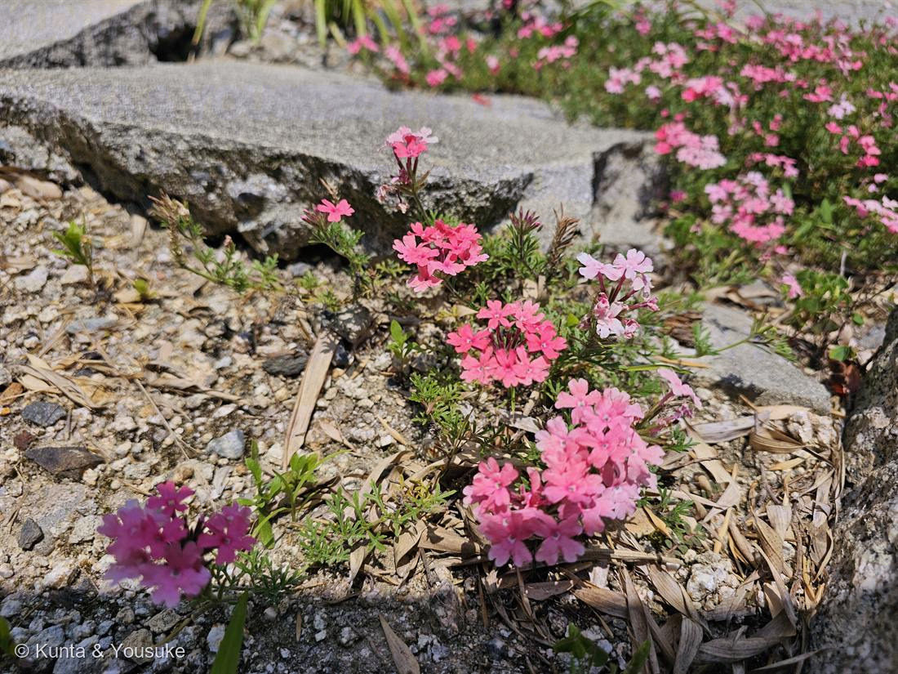

ビジョザクラ（美女桜）
Glandularia sp.（細葉のなかま・種は同定中）
別名 · バーベナ／ハナガサ ／ 英名 · garden verbena ／ 原産 · 南米
クマツヅラ科 · Verbenaceae（ビジョザクラ属 Glandularia／かつてはクマツヅラ属 Verbena）
燻太さんの見立てが、2つとも「植物学の記載そのもの」だった「桜みたいな花びら」「細くてどこか頼りなさげな葉っぱ」──そして「こんな暑いし水の少なそうな場所でも咲いているなら、とっても強い子なのかもね」
⭐⭐⭐ 「桜みたいな花びら」── その「桜」が、この子の名前だった
- ⭐⭐⭐この子の和名は「ビジョザクラ（美女桜）」。燻太さんが「桜みたいな花びら」と書いたその「桜」が、そのまま名前に入っている。
- ⭐そして、花びらの形も、出典に書いてあるとおりだった：「先は4-5裂し、径10mm弱、裂片の先が凹む」。──花びらの先が、へこんでいる。あの、桜の花びらの、切れこみ。燻太さんが見たのは、これだと思う。
- ⚠ただし、正直に書くね。名前の由来は、まっすぐ「桜」じゃなかった。日本語版 Wikipedia いわく「日本では、さくら草に似ているところから、『美女桜』の別名がある」。──似ているとされたのは、サクラソウ（桜草）のほう。
- ⭐⭐でも、それはこういうことだ。サクラソウの「桜」も、花びらが桜に似ているから。つまり 桜 → サクラソウ → 美女桜 という二段階。──燻太さんは、その途中の一段を飛ばして、いちばん奥にある「桜」を、直接見ていたことになる。
⭐⭐ 「細くてどこか頼りなさげな葉っぱ」── 図鑑の記載と、同じ言葉
- この子の葉の記載は、こう：「葉は対生し、3全裂、さらに羽状に深裂、裂片は線形」。
- ──まず3つに割れて、それがさらに羽のように裂けて、最後の一片は糸みたいに細い。三段階で、細かく刻まれている。
- ⭐燻太さんの「細くてどこか頼りなさげ」は、この記載を、やさしい言葉で言い直したものだった。「3全裂・羽状深裂・裂片は線形」と「細くて頼りなさげ」は、同じものを見て、別の言葉で書いている。
- ⭐そして、この葉の細かさが、種を絞る手がかりになる。ふつうの園芸バーベナ（Glandularia × hybrida）の葉は、ここまで細かくは裂けない。ここまで刻まれるのは、細葉のグループだけ。
⭐⭐ 「とっても強い子なのかもね」── この写真が、その証拠になっている
- 燻太さんは、こう書いた：「こんな暑いし水の少なそうな場所でも咲いているなら、とっても強い子なのかもね」。
- ⭐写真を見てほしい。この子がいるのは、割れて段差のできたコンクリートと、乾いた砂利のすきま。まわりには枯れた葉くずが積もり、日ざしはまともに当たっている。土らしい土は、ほとんどない。
- ⭐そして右奥を見ると、一面に群れている。──咲いているだけじゃなく、増えている。
- ⭐⭐ここが大事なところ。「暑さと乾燥に強い」ということを、ぼくは出典の中に見つけられなかった（Wikipediaには耐寒性の記載はあるけれど、耐暑性・耐乾性の記載はなかった）。──でも、この写真がある。燻太さんが暑い夏の昼下がりに、萎れていないのを見て、写真に撮った。それは、この図鑑が自分で手に入れた証拠だと思う。
- 花期は5〜10月。南米原産。──夏じゅう、ずっと咲いている子だよ。
⭐⭐⭐ クマツヅラ科 ── 今日、この科の話を2回した
- この子は、クマツヅラ科（Verbenaceae）。──図鑑では 004 ランタナ・006 コバノランタナと同じ科。
- ⭐⭐⭐そして、今日いちばんに登録した 071 ハマゴウが、この科から出ていった子だった。1990年代に、DNAで調べたら「シソ科だった」と分かって、引っ越していった。──今日は、この科から出ていった子で始まって、この科の中心にいる子で終わる日になった。
- ⭐⭐「クマツヅラ科（Verbenaceae）」という科の名は、クマツヅラ属（Verbena）から来ている。この子はもともとその Verbena 属に置かれていた——つまり、科の名の、いちばん近くにいた子。
- ⭐ところが、この子も動いた。ビジョザクラ属（Glandularia）は、クマツヅラ属（Verbena）から分けられた。だからいまの学名は Glandularia。──ハマゴウは科ごと引っ越し、この子は属だけ引っ越した。同じ科の中で、いろんな引っ越しが起きている。
- ⭐でも科は変わらない。クマツヅラ科の中で、名の主のすぐ隣にいる。──ランタナ（残った子）・ハマゴウ（出ていった子）・この子（分けられた子）。今日の図鑑には、その三人が揃った。
同定について（正直に ── 出典が「不明」と書いている）
- 属は確実にビジョザクラ属（Glandularia）。種は保留する。──理由がある。
- 候補① ヒメビジョザクラ（Glandularia tenera）：南米原産。葉が「3全裂、さらに羽状に深裂、裂片は線形」で写真と合う。園芸で使われ、逸出して野生化している。花期5〜10月。
- 候補② カラクサハナガサ（Glandularia tenuisecta）：西日本で見られる、よく似た子。
- 候補③ 細葉系の園芸品種（宿根バーベナ）：写真をよく見ると、濃いピンク・淡いピンク・紅紫と、色のちがう株が混じっている。──これは誰かが色違いを植えたものが、割れ目に広がった可能性を示している。
- ⚠⚠そして、いちばん大事なこと。①と②の見分けについて、専門の植物サイトが、こう書いている：
「両者の違いは明確に示されておらず、不明」 - ──専門家が「不明」と書いているものを、ぼくが写真1枚で決められるわけがない。だから Glandularia sp. で止める。019 コケ・020 フィロデンドロン・073 トクサと同じ、「属まで確か・種は保留」の枠。
- ⭐確かめる手：もし花壇のふちや、近くに植えたあとがあれば③。まったくの野生の広がりなら①か②。──今度そこを通ったら、まわりを見てみてね。
この植物のこと
- クマツヅラ科ビジョザクラ属。南米原産の多年草。茎は地を這って広がるので、グラウンドカバーによく使われる。花は「枝先に密な穂状に付き、筒部長さ10〜15mm、先は4-5裂し、径10mm弱、裂片の先が凹む」。花期5〜10月。
- 「バーベナ」はクマツヅラ科クマツヅラ属（バーベナ属）のことをまとめて呼ぶ言い方で、250種ほどある。園芸で「バーベナ」として売られている花のほとんどは、いまは Glandularia（ビジョザクラ属）。だから「バーベナ」という言葉は、いまちょっとだけズレている——そのズレも、この子の物語の一部だね。
- おまけ植物はクマツヅラ（馬鞭草・Verbena officinalis）。──この科の、名の主そのもの。日本の野に自生する在来種で、花は3〜4mmととても小さく、細い穂にまばらに咲く。華やかなビジョザクラとは、まるで似ていない。科の名前をもらった本人が、いちばん地味——それを見に行こう。道ばたや空き地で、夏に。
参考：野山の花たち「ヒメビジョザクラ」（学名・クマツヅラ科ビジョザクラ属・南米原産・葉は3全裂→羽状深裂→裂片は線形・裂片の先が凹む・花期5〜10月・カラクサハナガサとの違いは不明）／Wikipedia「バーベナ」（クマツヅラ科クマツヅラ属・「さくら草に似ているところから『美女桜』の別名」・花弁は5裂）／三河の植物観察「ビジョザクラ」（ビジョザクラ属はクマツヅラ属から分離）